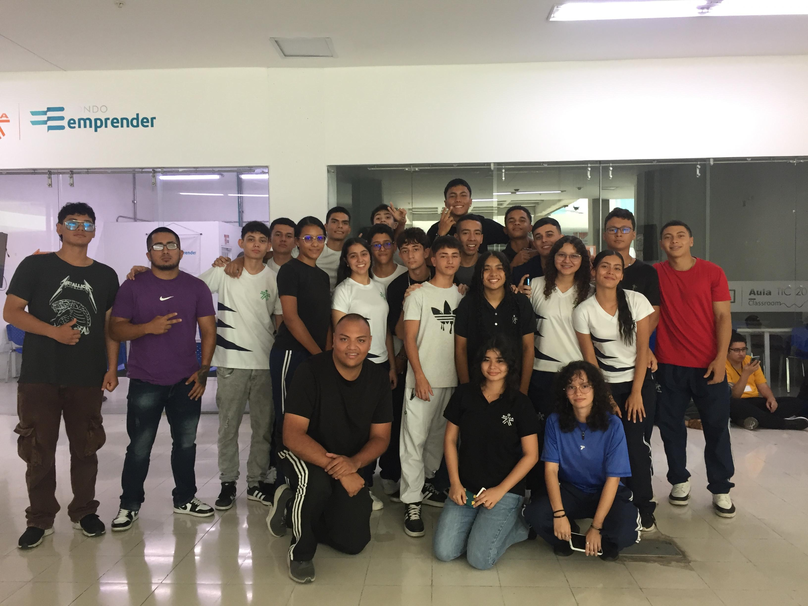

Our Mission
We are a dedicated team of SENA trainees passionate about combining technology with environmental awareness. Our project for COP16 demonstrates how we can leverage modern tools, including artificial intelligence, to promote environmental care and sustainability.
Through this platform, we've created interactive experiences that help raise awareness about environmental conservation, including:
- Interactive educational games
- AI-powered wildlife detection
- Environmental awareness tools
- Biodiversity conservation resources
Our team believes in the power of technology to create positive environmental change, and we're proud to contribute to COP16's mission of protecting our planet's precious ecosystems.